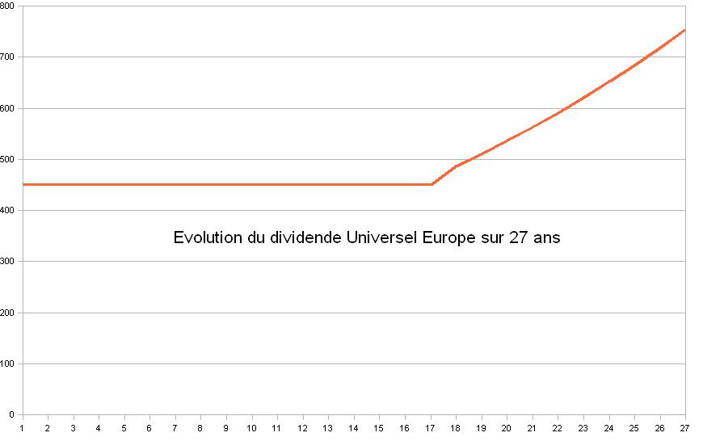
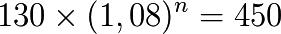
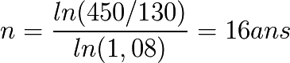

How set-up a currency based on Universal Dividend?
A dividend universal based currency can be set-up based on a new currency or on an existing one following two approaches, simple or progressive.
Simple approach
First approach consist to set-up an initial universal dividend superior to the “c” rate target that we will let unchanged during time that the monetary mass growth rate reach “c”. From now on, we regularly increase the universal dividend following the “c” rate. This approach is particularly suitable in the case of a preexisting currency that mutates to universal dividend.
For instance, in euro zone, this approach could be performed based on social minimum financial help ever installed, grouping all social helps within a unique and simplified counter, and integrating in the preexisting salary the dividend universal mention in the gross wage. It could be a “motionless revolution” which would essentially consist in awareness of basic income as base of whole free economical activity based on sovereign individual, taking all his part in the monetary system.

Progressive approach, the European case
Second approach consist to allocate to each new member an initial credit fix associated to an optimal universal dividend since the beginning. This solution is particularly suitable to create a new currency within a LETS.
Europe give us an absolutely interesting case about a truncated universal dividend. Truncated because a big part of Euro zone does not benefits of minimal income, and that an other part benefits of a conditional minimal income (so non universal) and furthermore which is very high. We got individuals working for others with the simple application of an asymmetric monetary politic. Furthermore, conditions to get those minimal incomes are extremely complex, and need for individuals so much energy to ask their part to different counters, that one time obtained, it discourages very strongly monetized economic activity, that most of the time consist essentially in a risk to get out obtaining conditions.
The observed minimum income in France or in Germany is about on average 450€ / months (sometimes much more with others helps, but also least if besides that the individual ventures to monetize a declared activity).
If euro zone brutally says this universal dividend level for 330 million citizens, this would be

a 18% rate of the monetary mass, which, to fix universal dividend, could reach the optimal growth rate of 5% of monetary mass in 15 years.
Universal dividend it-self would follow this evolution:
{kind=link}
We could object that this evolution could be sudden, creating violent and sudden economical distortions, countries in which a zone are private of universal dividend seeing with a new and high universal dividend could be quickly disorganized economically.
We can also imagine an other strategy of convergence more flexible, starting from a universal dividend calculated on 2010 monetary mass, of 130 € per months per individuals for individuals private of minimum income, to make converge toward a target of 450 € per months per individuals in the whole zone.
Basing on an asymmetric and strong growth of euro monetary mass observed at 8% per years from 2000 to 2007 (Law question: why did we allowed some of them to benefits exclusively monetary mass growth of common money at the detriment of other individuals?), we would reach very quickly this goal because:

equals to

Same duration as first strategy! (but creating less money, and so in a way more progressive).
Possibilities of progressives establishing exist, this is a simple question of spatio-temporal defined goal fixing, associated to recognition of equality between individuals of the same monetary zone behind measure of all value, and so behind monetary creation.

Reflexion on loan interests
Regardless the monetary system used, it is right to think carefully to loan interest issue. If this interest exceeds money mass growth rate, we are in a case in which we must recover more money than it is created, what can prove mechanically impossible to realize, independently to all production and exchange levels.
If an autonomous economical zone but unisulated, whose local money were feed through an initial loan interest, then sees arbitrarily private of the associated money creation, then creditor’s demand is to give back more money than it exist locally. Those cases are conditions of forced bankruptcy.
For instance in France on 2010, thought monetary mass increased of 8% per years during 2000 to 2007, (7% between 2000 and 2010 due to the contraction 2007 – 2010), the 22% interest rate is a legal rate, relevant in addition to individuals the more remote from money creation, so the less susceptible to refund. This is sufficient condition to provoke personals flaws.
But also taking the case of a global money growth rate of 7% per year, with this additional money which is not symmetrically allocated within a zone, but only benefit to centrals transmitters and their affiliates to the center of the global Ponzi pyramid. A local interest rate of 5%, however lower to the global growth rate, will be, in remote place of emission, superior to local money growth which will be for instance of 1%. Then it is here from the moment of acceptance of this loan, a case of local decrease of monetary mass 5% - 1% = 4% per year, leading to local deflation and so to forced bankruptcy, independently to all production and exchange value notion.
We might say that whoever accepts the loan should evaluate the ins and outs, and its responsibility to evaluate his “risk, except that he is behind a Bank system which got access to all his accounts, and to global financial data. So, there is an asymmetric access to information, which allows one to take the advantage over the other. In fact the advantage of the money transmitter is immeasurable compared to the borrower. The first has all the information and all power to change it, the second has neither one nor the other.
With a transparent universal dividend, money mass long term growth being known and dense in economy, the fix interest rate of a money credit (of a previously accumulated money by the lender) shall not legally exceed universal dividend rate to have insurance that the general conditions used to pay principal and interest. If the “risk” proves overweening for the lender, solution is not to increase interest rate beyond require maximal conditions, but to loan less or not at all.
At least this should also be the case on all monetary system. The interest rate of a loan can not legally exceed monetary mass growth rate. Without this, it is sure that conditions are not filled to be certain that it is possible to refund a loan at superior rate, and such contracts must be logically declared inadmissible.
It is logically aberrant that Law does not prohibit to emit credit with an interest rate superior to monetary mass growth rate.
Reflection on tax
Same reasoning on the interest loan, implies that tax can NOT globally exceed monetary mass growth rate, except to give to the State an untenable prerogative on individual initiative.
This means that on an universal dividend economy, community representative, to finance collectives projects with tax must their estimate basing on the number of managed individuals, and knowing money growth “c” factor do not take at maximum a global fraction the lower possible “f × c”. For the rest, the State must finance by counter goods and services it produces, and that not going into debt beyond reasonable given normal flow of income which it is supposed to get.